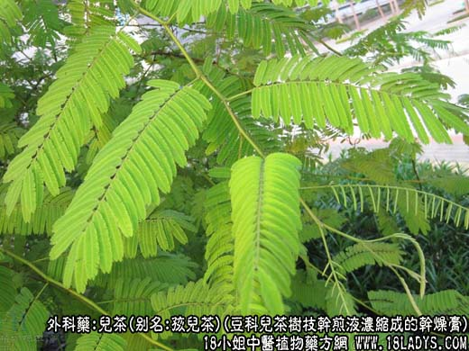
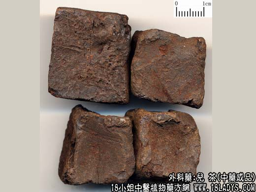
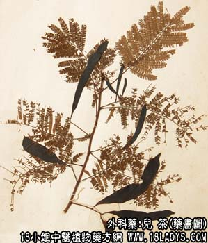

本品为较常用中药。始载《本草纲目》。商品分儿茶膏及方儿茶两类。
1、儿茶膏。
别名：孩儿茶、黑儿茶。
来源：为豆科植物落叶乔木儿茶树的枝干心材碎片煎液经浓缩而成的干燥膏。野生或栽培。
产地：主产于云南西双版纳傣族自治州的一带，以勐龙产量最大。进口品于缅甸及印度。
性状鉴别：呈不规则块状，大小不一。表面黑色或棕褐色，平滑而稍具光泽，有时可见裂纹。质脆、易碎裂，断面不整齐，棕红色，有细孔，亦有光泽。气无、味涩、先苦而后甜。（云南产品：有时较粗糙，无光泽，味涩）。以色黑略带红色、有光泽、不焦糊者为佳。
2、方儿茶
别名：方茶、棕儿茶、甘蜜。
来源：为茜草科常绿藤本植物茶钩藤（干巴儿茶树）的叶及嫩枝水煎浓缩后切成方块的干燥膏。野生或栽培。
产地：主产于印尼、马来西亚等地，多经新加坡转香港输入我国。
性状鉴别：呈方块状，直径约2厘米，中央略抽缩凹陷。表面棕色至黑褐色。气无，味涩。火上烧之起泡而有香气。方儿茶因加工方法不同，在商品上又分老儿茶和新儿茶两种。老儿茶黑褐色，常粘连，断面胶质厚。新儿茶棕褐色，不粘连、断面胶质薄，习惯认为老儿茶比新儿茶好。
主要成分：含鞣质（为儿茶精、表儿茶精、儿茶鞣质、儿茶红等）、粘液质、脂肪油、树胶。
药理作用：有收敛、消炎、止血作用（与儿茶鞣质的作用有关）。实验证实还有以下作用：
1、抑制肠蠕动。其水溶液能抑制家兔十二指肠和小肠的蠕动。
2、抗病毒。有抗流行性感冒病毒的作用。
3、抗真菌。在试管内对多种真菌有抑制作用。
炮制：砸碎或轧粉，生用。
性味：苦、涩、平。
归经：入肺经。
功能：清热生津，化痰。外用生肌止痛、收敛止血。
主治：内服治痰热咳嗽，口渴。外用治湿疮、牙疳，口疮，下疳。痔肿等症。
临床应用：1、用于治疗鼻炎、鼻窦炎。可用儿茶研末吹鼻。
2、用于治疗口腔炎、咽喉炎。可用儿茶6g，银花9g，连翘9g，煎水含漱。
3、用于治鼻衄和痔疮出血。可用儿茶末外敷，或用儿茶7.5g，研末，桂皮1.5g研末，沸水240g，浸半小时滤净后外洗痔疮，或用棉花浸药水作鼻孔压迫止血。
4、用于治外伤出血。用儿茶末或加三七末外敷，加压包扎，可以止血。对于破溃伤口创面有出血、分泌物增加时，用儿茶煎水外洗或湿敷，有止血止痛作用。褥疮分泌物多，久不收口，用儿茶末外敷或煎水外洗，有收敛生肌作用。
5、用于治白带过多。可用儿茶9g，蛇床子15g，煎水外洗和注药。
6、治疗皮肤湿疹、溃疡、分泌物多时，可用儿茶配轻粉、冰片、龙骨、炉甘石等外敷，方如儿轻散。
用量：外用适量。
处方举例：儿轻散：儿茶9g，轻粉6g，冰片0.9g，龙骨9g，研末水调外敷。
注：1、理化鉴别法：取儿茶膏或方儿茶粉末少许，分别加水煮沸、过滤、滤液加三氯化铁溶液一滴，均即刻呈黄绿色（鞣质）；取方儿茶粉末少许。溶于酒精中，过滤。滤液中加入少许氢氧化钠，振摇后加石油醚数毫升，石油醚层显绿色荧光。而儿茶膏作同样处理，则不显绿色荧光。
2、成分：儿茶膏主要含儿茶鞣酸约20%～50%，并含表儿茶表及儿茶素等2%～20%，但不含儿茶荧光素；方儿茶主要含儿茶素约30%～50%，儿茶鞣酸约24%。以及檞皮素，儿茶荧光素及棕儿茶碱等。